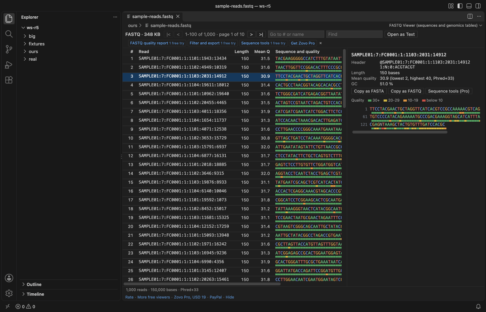

FASTQ & FASTA Viewer, VCF, SAM
FASTQ & FASTA Viewer, VCF, SAM, a VS Code extension by Zovo
Open FASTQ, FASTA, VCF, SAM, BED and GFF files in VS Code as a fast table, plain or gzipped, even when they are several GB. It never changes your color theme. Made by Zovo.
Free, MIT license. Needs VS Code 1.75.0 or newer. Extension ID zovo.zovo-fastq-viewer, version 0.1.0.

Free, with no account and no network calls:
- FASTQ, FASTA, VCF, SAM, BED, GFF3 and GTF files, plain, gzip or BGZF (.gz, .bgz). The file is read once in the background to build a small index, then pages load on demand, so a 2 GB FASTQ never sits in memory.
- Bases in color and FASTQ quality as a color bar under each read. Click a read for all of it, with its quality per base.
- FASTA: every sequence with its length, GC and N percent. Click one for the wrapped sequence, the reverse complement and a motif search on both strands with IUPAC codes (GAATTC, TATAWAW, ...).
- VCF and SAM: the header in its own panel, records split into columns, INFO and FORMAT fields spelled out per row with their header descriptions, SAM flags in words and tags with their types.
- BED, GFF3 and GTF: columns with the attributes as key and value.
- Go to a record number or a region like chr1:10,000, find text in the records, page with Page Up and Page Down.
- Your color theme and token colors stay as they are. This extension adds no grammar, no theme and no color setting.
Zovo Pro: USD 19 once, for the Pro tools in every Zovo extension. Each Pro tool has 1 free try on your computer first:
- FASTQ quality report: per-base quality box plots, base and N content, GC and length distributions, adapter hints and overrepresented sequences, saved as one HTML page.
- Filter and export: keep records by an ID list, length, quality or region (chr:start-end) and write them as FASTA, FASTQ, VCF, SAM, BED, GFF or CSV, gzipped when the name ends in .gz.
- Sequence tools: translation in 6 frames, an ORF finder on both strands and primer melting temperatures, with FASTA and CSV export.
Questions people ask
Is FASTQ & FASTA Viewer, VCF, SAM free?
Yes. FASTQ & FASTA Viewer, VCF, SAM is free and MIT licensed.
How do I install FASTQ & FASTA Viewer, VCF, SAM?
Click "Install in VS Code" above, or search for zovo.zovo-fastq-viewer in the Extensions view.
How to use it
- Click a
.fastq,.fq,.fasta,.fa,.fna,.samfile or any of them with.gz. They open in this viewer. .vcf,.bed,.gff,.gff3and.gtffiles keep opening as text, because people edit them by hand and.vcfis also the contact card format. Right-click one and choose Open in FASTQ Viewer, or click the table icon at the top right of the text editor..vcf.gzand the other gzipped names open in the viewer directly.- Type a record number (
#2500) or a region (chr2:1,200,000) in Go to. In FASTQ and FASTA files, Go to also takes part of a read or sequence name. - To try it without your own data, run FASTQ Viewer: Open the Sample FASTQ File (or the FASTA or VCF sample) from the Command Palette. The samples are made up.
- The Pro tools are in the Command Palette (FASTQ Viewer: ... (Pro)), in the Explorer right-click menu, and in the small row at the end of the viewer toolbar. The row closes with its x for the rest of the session, and the setting
fastqViewer.showProToolshides it for good.
What it reads
| File | What shows |
|---|---|
| FASTQ (.fastq, .fq) | Read name, length, mean quality, bases and a quality bar; multi-line reads; Phred+33 and Phred+64 |
| FASTA (.fasta, .fa, .fna, .ffn, .faa, .frn) | Name, description, length, GC and N percent; protein files show residues |
| VCF (.vcf, .vcf.gz) | Header definitions, contigs, samples; CHROM to FILTER, INFO, the genotype per sample |
| SAM (.sam) | @HD, @SQ, @RG and @PG headers; all 11 columns, flags, CIGAR, tags |
| BED, GFF3, GTF | Every column and the attributes; a GFF3 ##FASTA section ends the feature list |
Plain gzip cannot jump to the middle of a file, so pages far from the start of a large .gz take a moment; the next page is quick again. Files written with bgzip (most .vcf.gz) jump at once. BAM and CRAM files are not opened by this version.
Privacy
The extension reads the file you open and nothing else. It makes no network calls, and nothing is uploaded or measured. The Pro tools write only the files you ask for. The links at the bottom of the viewer (Rate, More free tools, Zovo Pro) open a page only when you click them, and the setting fastqViewer.showSupportLinks hides them.
Settings
| Setting | Default | What it does |
|---|---|---|
fastqViewer.pageSize | 100 | Records per page. |
fastqViewer.basesShown | 300 | Bases shown per read in the FASTQ and SAM tables. |
fastqViewer.lineWidth | 60 | Bases per line in the FASTA sequence view. |
fastqViewer.colorBases | true | Colors A, C, G and T inside the viewer only. |
fastqViewer.orfMinAa | 100 | Shortest ORF the ORF finder lists, in amino acids. |
fastqViewer.showProTools | true | Shows the Pro tools in menus, the palette and the toolbar row. |
fastqViewer.showSupportLinks | true | Shows the Rate, More free tools and Zovo Pro links. |
fastqViewer.askForRating | true | Asks once for a rating after two good uses at least 30 minutes apart. |
Zovo Pro
One payment of USD 19 unlocks the Pro tools in every Zovo extension on your computers; a team of 5 is USD 59. The key works offline. Run Zovo Pro: Get Zovo Pro from the Command Palette, or click Get Zovo Pro in the toolbar row. The Zovo Pro tab lists this extension's Pro tools and your free tries before any payment page opens.
Install FASTQ & FASTA Viewer, VCF, SAM
Click the button to open VS Code and install it, or press Ctrl+P (Cmd+P on macOS) in VS Code and run ext install zovo.zovo-fastq-viewer.
Free, MIT license. Needs VS Code 1.75.0 or newer. Extension ID zovo.zovo-fastq-viewer, version 0.1.0.
Source code and issues are on GitHub.
Zovo Pro and support
Zovo Pro: USD 19 once, every Zovo viewer. It turns on the Pro tools in this extension and in the other Zovo extensions you use. The free features stay free.
After a card payment your license key shows on the next page. Paste it with the command "Zovo Pro: Enter a key".
You can also support the work with no Pro:
Need your format supported?
Open a format request with a sample file, and I reply there whether it can be done. For USD 299 once, through this GitHub Sponsors tier, I add your file format or a missing feature to this extension, with tests, within 7 days.